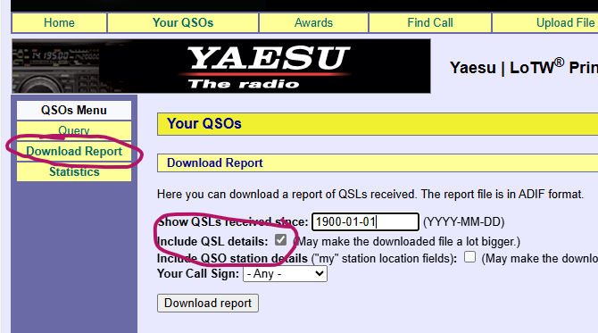
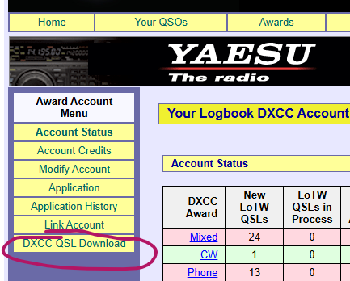

|
Bob, If your pre-LoTW DXCC account and your LoTW account are linked, I believe you can get both sets of confirmation from LoTW, but you need to do them separately. You can download all your LoTW confirmations (as you’ve probably already found) from “Your QSOs”, “Download Report”. Be sure to check “Include QSL details”. I believe you can download your non-LoTW DXCC confirmations from “Awards”, “Select DXCC Account”, “DXCC QSL Download”. Screenshots of both below. I say “I believe” because
I have 0 non-LoTW confirmations and when I do that “DXCC QSL Download” I get a file containing 0 QSOs, so I assume that if I had card-checker non-LoTW confirmations that’s where they’d be. Someone on here who has confirmations of both types may be able to
confirm for you. If your non-LoTW DXCC account isn’t linked to your LoTW one, the option for that is right above the DXCC download one: “Link Account”.   73, -John NN6U From: Chat <chat-bounces@ncdxc.org>
On Behalf Of Bob Witmer via Chat Hello I’ve finally decided to input my log into Club Log but I’m not sure on the overall process. It looks like I can download an ADIF file from the LoTW system for QSOs that occurred since LoTW began - but I have QSOs going back to the late 1960s that I have ARRL country credit for, that do not appear to be contained in the ADIF file. Do I manually generate an ADIF file for the important pre-LoTW QSOs - like countries worked - and submit that file along with the LoTW ADIF file or is there another process I’m missing? Thanks, Bob, W3RW |